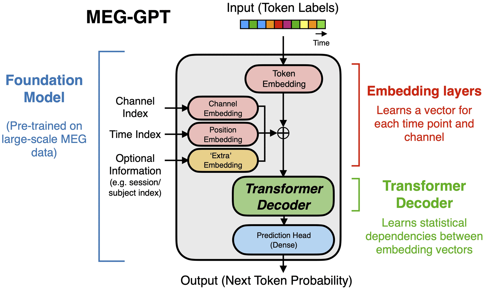

braindecode.models.MEGGPT#
- class braindecode.models.MEGGPT(n_outputs=None, n_chans=None, chs_info=None, n_times=None, input_window_seconds=None, sfreq=None, *, n_tokens=66, n_codes=128, rnn_hidden_size=128, temperature=0.1, embed_dim=256, num_heads=4, feedforward_dim=1024, n_patches=(100, 25, 20, 10, 8), patch_lens=(1, 4, 4, 8, 8), n_last_steps=16, patch_band=(8, None, None, None, None), activation=<class 'torch.nn.modules.activation.GELU'>, drop_prob=0.2, embedding_init_bound=0.05, on_non_divisible='pad')[source]#
MEG-GPT from Huang et al. (2026) [huang2026meggpt].
Foundation Model Attention/Transformer Recurrent

MEG-GPT predicting the next token from token, channel, position and optional extra embeddings through a Transformer decoder, reproduced from [huang2026meggpt] (CC BY 4.0).#
Added in version 2.1.
Architecture Overview
With
Bthe batch,C = n_chans,D = embed_dimandSthe number of segments (n_times, padded or cropped to a multiple of the segment length, divided by it):The EphysTokenizer encoder [ephystokenizer] turns each channel into a stream of discrete tokens, one per sample: a GRU runs over the channel, a linear layer and a layer norm give one logit per codebook entry, and the argmax is remapped to a token id through the released vocabulary.
x (B, C, T) -> token ids (B, C, S * 100).The token stream is cut into segments of
n_patches[0] * patch_lens[0]tokens (100, i.e. 0.4 s at 250 Hz). Token, time and channel embeddings are summed.-> (B * S, 100, C, D).A stack of causal time-attention layers runs on every channel. In layer
ithe keys and values are pooled inton_patches[i]patches ofpatch_lens[i]steps and the output keeps the last steps only, so the sequence shrinks ton_last_stepsoutputs per segment.-> (B * S, n_last_steps, C, D), merged to(B, S * n_last_steps, C, D).The outputs are averaged over time and segments into
(batch, n_chans, embed_dim)features (Section 2.4 of the paper), flattened and classified by a linear layer.-> (B, C, D) -> (B, C * D) -> (B, n_outputs).
Macro Components
MEGGPT.tokenizerOperations: per-channel GRU, linear layer, layer norm, argmax and vocabulary lookup.
Role: discretise each sample of each channel. The argmax has no gradient, so the tokenizer is frozen (its parameters do not require gradients).
MEGGPT.layersOperations: pre-norm causal attention over time with patched keys and values (a linear layer mixes the heads and steps of a patch), a banded mask in layers with a
patch_band, and a feed-forward block.Role: model the temporal dependencies of each brain region.
MEGGPT.final_layerOperations: flatten and linear projection.
Role: map the time-averaged features to class logits.
Temporal, Spatial, and Spectral Encoding
Temporal: the tokenizer GRU encodes the whole window in one pass (the reference uses 200-sample windows, with the same tokens up to 200 samples); the GPT attends causally within independent segments of
n_patches[0] * patch_lens[0]tokens.Spatial: each parcel is tokenized and attended alone, with a learned channel embedding; only the flattened
final_layermixes parcels.Spectral: implicit in the tokenizer GRU; there is no explicit transform.
Additional Mechanisms
Input: the 52 parcels of the Glasser 52 parcellation in the released order, since the channel embedding is indexed by position, sign-flip aligned (Section 2.5.3), at 250 Hz and z-scored over the recording (
tokenize_session(standardize=True)in the reference); the model neither normalises nor checkssfreq. Withon_non_divisible="pad", the feature mean skips the kept steps after the end of the input.Channel mask: with
return_features=True,ch_mask(the mask ofpad_channels_collate(), real channels first) gives each recording the features of its real parcels run alone, and zeros for padded channels. The flattened head is tied ton_chans, so withoutreturn_featuresit raises aValueError.Token mask:
token_mask(True=hide) zeroes selected clean token embeddings before the causal decoder, without changing the frozen tokenizer or the attention masks; it is neither the released pretraining method nor a bidirectional masked-sample reconstruction objective.encode_tokens()returns next-token targets for a downstream vocabulary head; the encoder installs none.Session embedding: the released model adds one for its 621 Cam-CAN sessions; the paper discards it downstream (Section 2.5.4), so the class has none, the converted weights drop it, and the forward equals the released model called without session labels.
Not ported: only the released configuration, time attention with patching. The reference’s optional channel and cross attention, unpatched keys, rotary or sinusoidal positions and batch/group norms are not implemented.
Pretrained Weights
The released Cam-CAN MEG-GPT and EphysTokenizer weights, converted to this class’s keys without the next-token head and the tokenizer’s signal decoder, are at
braindecode/meggpt-pretrained(revision5c49e27c); the head is randomly initialized:from braindecode.models import MEGGPT model = MEGGPT.from_pretrained("braindecode/meggpt-pretrained", n_outputs=4)
They expect the input described above: source-space MEG at 250 Hz, the 52 parcels in the released order, sign-flip aligned and z-scored over the recording (Section 2.5.3). On the same token ids, the decoder outputs and the features equal those of the authors’ model called without session labels (#1555).
- Parameters:
n_outputs (int) – Number of outputs of the model. This is the number of classes in the case of classification.
n_chans (int) – Number of EEG channels.
chs_info (list of dict) – Information about each individual EEG channel. This should be filled with
info["chs"]. Refer tomne.Infofor more details.n_times (int) – Number of time samples of the input window.
input_window_seconds (float) – Length of the input window in seconds.
sfreq (float) – Sampling frequency of the EEG recordings.
n_tokens (
int) – Size of the GPT vocabulary (65 used codebook entries plus id 0 for the unused ones in the released vocabulary).n_codes (
int) – Codebook size of the tokenizer.rnn_hidden_size (
int) – Hidden size of the tokenizer GRU.temperature (
float) – Divisor of the tokenizer’s normalised logits before the argmax (the released EphysTokenizer value). It leaves the argmax unchanged except for float near-ties, so keep it to reproduce the released tokens.embed_dim (
int) – Embedding and model dimension.num_heads (
int) – Number of attention heads.feedforward_dim (
int) – Hidden width of the feed-forward blocks.n_patches (
Sequence[int]) – Number of key/value patches in each layer.patch_lens (
Sequence[int]) – Steps per key/value patch in each layer. Layerireadsn_patches[i] * patch_lens[i]steps and outputs as many steps as the next layer reads;n_patches[0] * patch_lens[0]is the segment length.n_last_steps (
int) – Number of steps the last layer outputs per segment.patch_band (
Sequence[Optional[int]]) – Half-width, in patches, of the banded attention of each layer;Nonefor no band.activation (
type[Module]) – Activation of the feed-forward blocks.drop_prob (
float) – Dropout after the embeddings, the attention and the feed-forward blocks.embedding_init_bound (
float) – Boundbof the uniform initialisationU(-b, b)of the token embedding, as in the reference initializer.on_non_divisible (
str) – How a window that is not a multiple of the segment length is handled: right zero-padded, cropped, or rejected.
- Raises:
ValueError – If some input signal-related parameters are not specified: and can not be inferred.
Notes
If some input signal-related parameters are not specified, there will be an attempt to infer them from the other parameters.
Methods
- encode_tokens(token_ids, token_mask=None, ch_mask=None, lengths=None)[source]#
Encode cached token ids and return their shifted next-token targets.
- Parameters:
token_ids (
Tensor) – Clean int64 ids(batch, n_chans, n_times), e.g. frommodel.tokenizer(x).token_mask (
Optional[Tensor]) – Boolean, same shape, True hides that token’s embedding.ch_mask (
Optional[Tensor]) – Boolean(batch, n_chans), True for real channels (real parcels first).lengths (
Optional[Tensor]) – Int64(batch,)valid time counts, defaultn_times; ids past them are zeroed before the embedding.
- Returns:
featuresandtokensas inforward, andtoken_ids, the ids as encoded (invalid ones zeroed, padded or cropped).output_indicesare the positions of the ids thattokensoutput, the lastn_last_stepsof each segment.next_token_targetsare the ids atoutput_indices + 1,target_validmarks those on real channels and beforelengths, andprediction_maskalso requires the target token to be hidden bytoken_mask, if given. The three are(batch, n_chans, n_segments * n_last_steps); invalid targets are zero.- Return type:
- forward(x, return_features=False, ch_mask=None, token_mask=None)[source]#
ch_mask: optional(batch, n_chans)mask of real channels, seecheck_ch_mask(). Needsreturn_features=True; the features and tokens of padded channels are zero.token_maskis a boolean(batch, n_chans, n_times)mask (True=hide): selected clean token embeddings are replaced by zeros before positions and causal context, not before tokenization. Seeencode_tokens()for next-token targets and loss selection.
- reset_head(n_outputs)[source]#
Replace the classification head for a new number of outputs.
This is called automatically by
from_pretrained()when the user passes ann_outputsthat differs from the saved config, and attaches a head to a model built withn_outputs=None. The default replaces the last linear or convolutional layer offinal_layerby a new one withn_outputsoutputs, and raisesNotImplementedErrorwhen that layer is constrained, whenfinal_layerholds more than one such layer, or when it does not end with one. Override in subclasses that need a model-specific head structure. Implementations keep changed constructor arguments in sync withself._update_init_kwargs, so that a saved model can be loaded back. Implementations requiring positive outputs can also useself._set_n_outputsto validate and record the new value.Examples
>>> from braindecode.models import BENDR >>> model = BENDR(n_chans=22, n_times=1000, n_outputs=4) >>> model.reset_head(10) >>> model.n_outputs 10
Added in version 1.4.